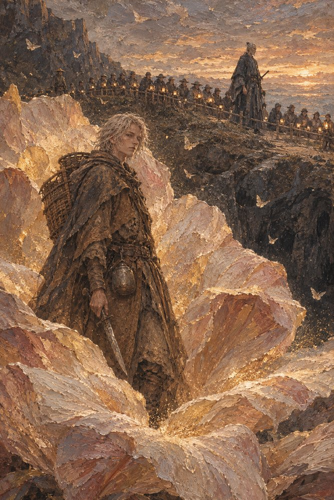

Record 14 of 15
The flower lets go
In the spring of the war’s third year, at dusk on the western rim of the hollow, the hermit lets the lips of the flower open for him, as they had for the boy at the Far Lamp, and fold round his hand. It finds nothing to take a purchase on; he draws his full-tang knife, lays the flat of it once against the nearest closed lobe, and it lets him go. A hundred and forty paces off, Higaide is on his feet.
A young, pale-blond, curly-haired man in a brown hooded cloak, a wicker basket on his back and a knife in his hand, stands among giant open petals dusted with gold and moths; above him on a ridge stand a topknot man with swords and a line of hatted men with lanterns along a fence, and a dark pit lies beside him..